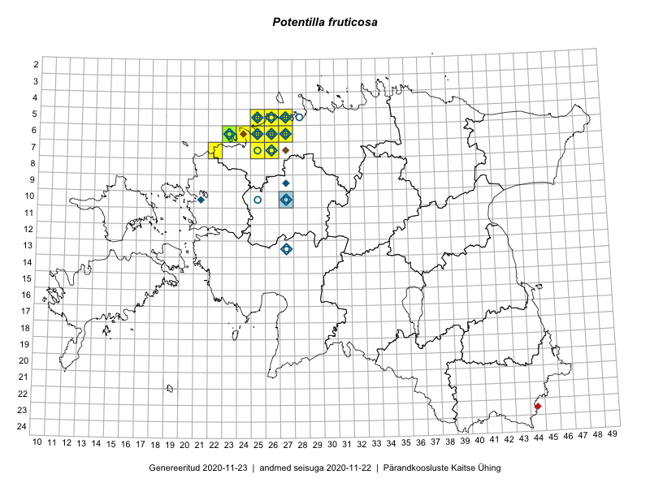

Potentilla fruticosa
Uuendatud: 2016-12-07
Kaardile koondatud taksonid: Potentilla fruticosa L.

Kaart põhineb 30 vaatlusel. Taime on leitud 8 ruudust.
| Ruut | Vaatleja(d) | Vaatlusaeg | Kirje tüüp | Viide andmebaasikirjele |
|---|---|---|---|---|
| 07-25 | Erkki Otsman, Sergei Smirnov | 2015-07-17 | ruut/ala | vaata PlutoFis |
| 07-26 | Erkki Otsman, Sergei Smirnov | 2015-07-17 | punkt | vaata PlutoFis |
| 06-24 | Mari Metsoja, Jaak-Albert Metsoja | 2015-07-31 | ruut/ala | vaata PlutoFis |
| 05-25 | Mari Metsoja, Jaak-Albert Metsoja | 2015-07-30 | ruut/ala | vaata PlutoFis |
| 06-26 | Mari Metsoja, Jaak-Albert Metsoja | 2015-07-29 | ruut/ala | vaata PlutoFis |
| 06-25 | Mari Metsoja, Jaak-Albert Metsoja | 2015-07-25 | ruut/ala | vaata PlutoFis |
| 06-25 | Mari Metsoja, Jaak-Albert Metsoja | 2015-05-16 | ruut/ala | vaata PlutoFis |
| 06-26 | Mari Metsoja, Jaak-Albert Metsoja | 2015-05-24 | ruut/ala | vaata PlutoFis |
| 05-25 | Mari Metsoja, Jaak-Albert Metsoja | 2015-05-30 | ruut/ala | vaata PlutoFis |
| 07-26 | Mari Metsoja, Jaak-Albert Metsoja | 2015-05-30 | ruut/ala | vaata PlutoFis |
| 06-23 | Jaak-Albert Metsoja, Mari Metsoja, Ott Luuk | 2015-06-05 | ruut/ala | vaata PlutoFis |
| 07-26 | Meeli Mesipuu, Thea Kull | 2016-06-03 | ruut/ala | vaata PlutoFis |
| 07-26 | Thea Kull, Meeli Mesipuu | 2016-06-03 | punkt | vaata PlutoFis |
| 06-25 | Toomas Kukk, Sander Laherand | 2016-07-05 | ruut/ala | vaata PlutoFis |
| 05-25 | Toomas Kukk, Sander Laherand | 2016-07-05 | punkt | vaata PlutoFis |
| 06-26 | Tiina Elvisto, Eerik Leibak | 2016-07-04 | ruut/ala | vaata PlutoFis |
| 05-26 | Tiina Elvisto, Eerik Leibak | 2016-07-04 | punkt | vaata PlutoFis |
| 06-26 | Tiina Elvisto, Eerik Leibak | 2016-07-04 | punkt | vaata PlutoFis |
| 06-26 | Tiina Elvisto, Eerik Leibak | 2016-07-04 | punkt | vaata PlutoFis |
| 06-25 | Sander Laherand, Toomas Kukk | 2016-07-05 | punkt | vaata PlutoFis |
| 06-25 | Sander Laherand, Toomas Kukk | 2016-07-05 | punkt | vaata PlutoFis |
| 05-25 | Sander Laherand, Toomas Kukk | 2016-07-05 | ruut/ala | vaata PlutoFis |
| 06-24 | Peedu Saar, Ott Luuk | 2016-09-06 | punkt | vaata PlutoFis |
| 06-24 | Peedu Saar, Ott Luuk | 2016-09-06 | ruut/ala | vaata PlutoFis |
| 06-24 | Peedu Saar, Ott Luuk | 2016-09-06 | punkt | vaata PlutoFis |
| 06-25 | Peedu Saar, Ott Luuk | 2016-09-06 | punkt | vaata PlutoFis |
| 07-26 | Jaak-Albert Metsoja, Mari Metsoja | 2016-07-04 | punkt | vaata PlutoFis |
| 05-25 | Jaak-Albert Metsoja, Mari Metsoja | 2015-05-30 | punkt | vaata PlutoFis |
| 07-26 | Jaak-Albert Metsoja, Mari Metsoja | 2015-05-30 | punkt | vaata PlutoFis |
| 06-23 | Jaak-Albert Metsoja, Mari Metsoja, Ott Luuk | 2015-06-05 | punkt | vaata PlutoFis |